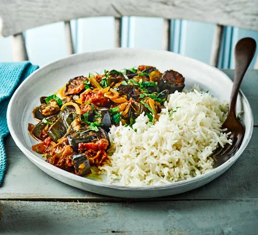

Roasted aubergine & tomato curry recipe

Ingredients
- 600g aubergine, or baby aubergines sliced into rounds
- 3 tbsp olive oil
- 2 oinons, finely sliced
- 2 garlic cloves, crushed
- 1 tsp garam masala
- 1 tsp turmeric
- 1 tsp ground coriander
- 400ml can chopped tomatoes
- 400ml can coconut milk
- pinch of sugar (optional)
- ½ small pack coriander, roughly chopped
- rice or chapatis, to serve
Steps
- Heat oven to 200C/180C fan/gas 6. Toss the aubergines in a roasting tin with 2 tbsp olive oil, season well and spread out. Roast for 20 mins or until dark golden and soft.
- Heat the remaining oil in an ovenproof pan or flameproof casserole dish and cook the onions over a medium heat for 5-6 mins until softening. Stir in the garlic and spices, for a few mins until the spices release their aromas.
- Tip in the tomatoes, coconut milk and roasted aubergines, and bring to a gentle simmer. Simmer for 20-25 mins, removing the lid for the final 5 mins to thicken the sauce. Add a little seasoning if you like, and a pinch of sugar if it needs it. Stir through most of the coriander. Serve over rice or with chapatis, scattering with the remaining coriander.